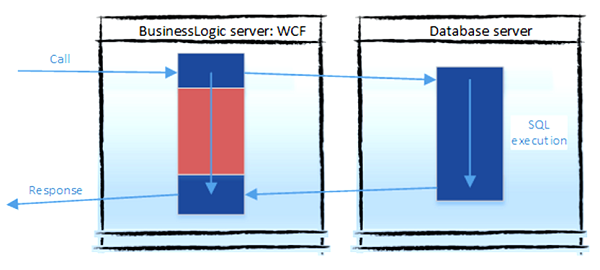

Asynchronous Database Operation
You get more performance by concurrency. The idea of async database operations is to release the business logics thread while the database is doing its job. This can lead to a huge performance difference in a heavy traffic environment (basically, will your business logics server / web-server crash or not).

In the picture, we talk about the red block, which can be released to serve other customers. As usual with async operations, there will be more thread context switching, which may cause minor performance delays, but concurrency benefits should outweigh the cons of context switching.
This is the theory. In practice, SQLProvider is calling the implementation of async methods from abstract classes under System.Data.Common. The implementation quality of your database connection .NET drivers will determine whether or not async is good for you. (E.g. The current situation is that MS-SQL-server handles async well, and MySQL does not so.)
Currently, SQLProvider supports async operations on runtime, not design-time.
Your execution thread may change. For transactions to support this, .NET 4.5.1 has a fix for asynchronous transactions that must be explicitly used.
Async queries and updates
The concept for async queries is this:
open System
open System.Threading.Tasks
open FSharp.Data.Sql
type MyWebServer() =
member __.``Execute Business Logics`` (orderId : int64) : Task<_> =
task {
use transaction =
new System.Transactions.TransactionScope(
// .NET 4.5.1 fix for asynchronous transactions:
System.Transactions.TransactionScopeAsyncFlowOption.Enabled
)
let context = TypeProviderConnection.GetDataContext cstr
let! fetched =
query {
for order in context.Main.Orders do
join customer in context.Main.Customers on (order.CustomerId.Value = customer.CustomerId)
where (order.OrderId = orderId)
select order
} |> Seq.executeQueryAsync
fetched |> Seq.iter (fun order ->
order.ShippedDate <- Some DateTime.UtcNow
)
do! context.SubmitUpdatesAsync()
transaction.Complete()
return "done!"
}
The functions to work with asynchrony are:
- Array.executeQueryAsync : IQueryable<'a> -> Async<<'a> []>
- List.executeQueryAsync : IQueryable<'a> -> Async<'a list>
- Seq.executeQueryAsync : IQueryable<'a> -> Async
- Seq.lengthAsync : IQueryable<'a> -> Async
- Seq.headAsync : IQueryable<'a> -> Async<'a>
- Seq.tryHeadAsync : IQueryable<'a> -> Async<'a option>
- and for your data context: SubmitUpdatesAsync : unit -> Async
- Seq.sumAsync : IQueryable<'a when 'a : comparison> -> Async<'a>
- Seq.minAsync : IQueryable<'a when 'a : comparison> -> Async<'a>
- Seq.maxAsync : IQueryable<'a when 'a : comparison> -> Async<'a>
- Seq.averageAsync : IQueryable<'a when 'a : comparison> -> Async<'a>
- Seq.stdDevAsync : IQueryable<'a when 'a : comparison> -> Async<'a>
- Seq.varianceAsync : IQueryable<'a when 'a : comparison> -> Async<'a>
Seq is .NET IEnumerable, which is lazy. So be careful if using Seq.executeQueryAsync to not execute your queries several times.
Also, stored procedures do support InvokeAsync.
Database asynchrony can't be used as a way to do parallelism inside one context.
Usually, database operations can't be executed in parallel inside one context/transaction. That is an anti-pattern in general: the network lag between the database and your logics server is probably the bottleneck of your system. So, in this order:
- Try to execute your business logics as database queries, as one big query.
- Or sometimes, not often, load eagerly data with a single query and process it in the logics server.
- Avoid cases in which you create as many queries as your collection has items.
So if you are still in the worst case, 3, and have to deal with a List
Avoid network traffic between business logics (BL) and database (DB). When you exit the query-computation, you cause the traffic.
Why Not to Use Async
As with all the technical choices, there are drawbacks to consider.
- Your codebase will be more complex. This will slow down your development speed if your developers are not F#-professionals.
- You must use other technologies supporting async or .NET tasks, like WCF or SignalR. There is no point in doing async and then still using
RunSynchronouslyat the end. - You may consider async as premature optimization. Starting without async and converting all later is an option, although your APIs must change.
- Async and transactions are a problem with the Mono environment.
- Async will make your error stacktraces harder to read: You may be used to search your functions from the stacktrace to spot any problems. With async, you don't have your own code in the error-stack. At the time of e.g. SQL-exception, there is no thread waiting, your code is not actively running, there is no stack.
type LiteralAttribute = inherit Attribute new: unit -> LiteralAttribute
--------------------
new: unit -> LiteralAttribute
namespace FSharp
--------------------
namespace Microsoft.FSharp
namespace FSharp.Data
--------------------
namespace Microsoft.FSharp.Data
<summary>Typed representation of a database</summary> <param name='ConnectionString'>The connection string for the SQL database</param> <param name='ConnectionStringName'>The connection string name to select from a configuration file</param> <param name='DatabaseVendor'> The target database vendor</param> <param name='IndividualsAmount'>The amount of sample entities to project into the type system for each SQL entity type. Default 50. Note GDPR/PII regulations if using individuals with ContextSchemaPath.</param> <param name='UseOptionTypes'>If set, F# option types will be used in place of nullable database columns. If not, you will always receive the default value of the column's type even if it is null in the database.</param> <param name='ResolutionPath'>The location to look for dynamically loaded assemblies containing database vendor specific connections and custom types. Types used in design-time: If no better clue, prefer .NET Standard 2.0 versions. Semicolon to separate multiple.</param> <param name='Owner'>Oracle: The owner of the schema for this provider to resolve. PostgreSQL: A list of schemas to resolve, separated by spaces, newlines, commas, or semicolons.</param> <param name='CaseSensitivityChange'>Should we do ToUpper or ToLower when generating table names?</param> <param name='TableNames'>Comma separated table names list to limit a number of tables in big instances. The names can have '%' sign to handle it as in the 'LIKE' query (Oracle and MSSQL Only)</param> <param name='ContextSchemaPath'>The location of the context schema previously saved with SaveContextSchema. When not empty, will be used to populate the database schema instead of retrieving it from then database.</param> <param name='OdbcQuote'>Odbc quote characters: Quote characters for the table and column names: `alias`, [alias]</param> <param name='SQLiteLibrary'>Use System.Data.SQLite or Mono.Data.SQLite or select automatically (SQLite only)</param> <param name='SsdtPath'>A path to an SSDT .dacpac file.'</param>
<summary> Specifies the database provider type for the SQL type provider. Each provider has its own specific implementation for SQL generation and data type mapping. </summary>
<summary> SQLite database using System.Data.SQLite or Microsoft.Data.Sqlite </summary>
<summary> Specifies how to represent nullable database columns in the generated types. </summary>
<summary> Option types are Option<_>. (Old true.) </summary>
<summary> Specifies how to handle case sensitivity when generating table and column names. </summary>
<summary> Keep original casing from the database </summary>
<summary> Specifies which SQLite library to use for connections. Different libraries may have different capabilities and platform support. </summary>
<summary> .NET Framework default </summary>
type MyWebServer = new: unit -> MyWebServer member ``Execute Business Logics`` : orderId: int64 -> Task<string>
--------------------
new: unit -> MyWebServer
val int64: value: 'T -> int64 (requires member op_Explicit)
--------------------
type int64 = Int64
--------------------
type int64<'Measure> = int64
type Task = interface IAsyncResult interface IDisposable new: action: Action -> unit + 7 overloads member ConfigureAwait: continueOnCapturedContext: bool -> ConfiguredTaskAwaitable + 1 overload member ContinueWith: continuationAction: Action<Task,obj> * state: obj -> Task + 19 overloads member Dispose: unit -> unit member GetAwaiter: unit -> TaskAwaiter member RunSynchronously: unit -> unit + 1 overload member Start: unit -> unit + 1 overload member Wait: unit -> unit + 5 overloads ...
<summary>Represents an asynchronous operation.</summary>
--------------------
type Task<'TResult> = inherit Task new: ``function`` : Func<obj,'TResult> * state: obj -> unit + 7 overloads member ConfigureAwait: continueOnCapturedContext: bool -> ConfiguredTaskAwaitable<'TResult> + 1 overload member ContinueWith: continuationAction: Action<Task<'TResult>,obj> * state: obj -> Task + 19 overloads member GetAwaiter: unit -> TaskAwaiter<'TResult> member WaitAsync: cancellationToken: CancellationToken -> Task<'TResult> + 4 overloads member Result: 'TResult static member Factory: TaskFactory<'TResult>
<summary>Represents an asynchronous operation that can return a value.</summary>
<typeparam name="TResult">The type of the result produced by this <see cref="T:System.Threading.Tasks.Task`1" />.</typeparam>
--------------------
Task(action: Action) : Task
Task(action: Action, cancellationToken: Threading.CancellationToken) : Task
Task(action: Action, creationOptions: TaskCreationOptions) : Task
Task(action: Action<obj>, state: obj) : Task
Task(action: Action, cancellationToken: Threading.CancellationToken, creationOptions: TaskCreationOptions) : Task
Task(action: Action<obj>, state: obj, cancellationToken: Threading.CancellationToken) : Task
Task(action: Action<obj>, state: obj, creationOptions: TaskCreationOptions) : Task
Task(action: Action<obj>, state: obj, cancellationToken: Threading.CancellationToken, creationOptions: TaskCreationOptions) : Task
--------------------
Task(``function`` : Func<'TResult>) : Task<'TResult>
Task(``function`` : Func<obj,'TResult>, state: obj) : Task<'TResult>
Task(``function`` : Func<'TResult>, cancellationToken: Threading.CancellationToken) : Task<'TResult>
Task(``function`` : Func<'TResult>, creationOptions: TaskCreationOptions) : Task<'TResult>
Task(``function`` : Func<obj,'TResult>, state: obj, cancellationToken: Threading.CancellationToken) : Task<'TResult>
Task(``function`` : Func<obj,'TResult>, state: obj, creationOptions: TaskCreationOptions) : Task<'TResult>
Task(``function`` : Func<'TResult>, cancellationToken: Threading.CancellationToken, creationOptions: TaskCreationOptions) : Task<'TResult>
Task(``function`` : Func<obj,'TResult>, state: obj, cancellationToken: Threading.CancellationToken, creationOptions: TaskCreationOptions) : Task<'TResult>
type TransactionScope = interface IDisposable new: unit -> unit + 13 overloads member Complete: unit -> unit member Dispose: unit -> unit
<summary>Makes a code block transactional. This class cannot be inherited.</summary>
--------------------
Transactions.TransactionScope() : Transactions.TransactionScope
(+0 other overloads)
Transactions.TransactionScope(transactionToUse: Transactions.Transaction) : Transactions.TransactionScope
(+0 other overloads)
Transactions.TransactionScope(asyncFlowOption: Transactions.TransactionScopeAsyncFlowOption) : Transactions.TransactionScope
(+0 other overloads)
Transactions.TransactionScope(scopeOption: Transactions.TransactionScopeOption) : Transactions.TransactionScope
(+0 other overloads)
Transactions.TransactionScope(transactionToUse: Transactions.Transaction, scopeTimeout: TimeSpan) : Transactions.TransactionScope
(+0 other overloads)
Transactions.TransactionScope(transactionToUse: Transactions.Transaction, asyncFlowOption: Transactions.TransactionScopeAsyncFlowOption) : Transactions.TransactionScope
(+0 other overloads)
Transactions.TransactionScope(scopeOption: Transactions.TransactionScopeOption, scopeTimeout: TimeSpan) : Transactions.TransactionScope
(+0 other overloads)
Transactions.TransactionScope(scopeOption: Transactions.TransactionScopeOption, transactionOptions: Transactions.TransactionOptions) : Transactions.TransactionScope
(+0 other overloads)
Transactions.TransactionScope(scopeOption: Transactions.TransactionScopeOption, asyncFlowOption: Transactions.TransactionScopeAsyncFlowOption) : Transactions.TransactionScope
(+0 other overloads)
Transactions.TransactionScope(transactionToUse: Transactions.Transaction, scopeTimeout: TimeSpan, interopOption: Transactions.EnterpriseServicesInteropOption) : Transactions.TransactionScope
(+0 other overloads)
<summary>Specifies whether transaction flow across thread continuations is enabled for <see cref="T:System.Transactions.TransactionScope" />.</summary>
<summary>Specifies that transaction flow across thread continuations is enabled.</summary>
<summary>Returns an instance of the SQL Provider using the static parameters</summary>
(+0 other overloads)
SqlDataProvider<...>.GetDataContext(selectOperations: SelectOperations) : SqlDataProvider<...>.dataContext
<summary>Returns an instance of the SQL Provider using the static parameters</summary><param name='selectOperations'>Execute select-clause operations in SQL database rather than .NET-side.</param>
(+0 other overloads)
SqlDataProvider<...>.GetDataContext(commandTimeout: int) : SqlDataProvider<...>.dataContext
<summary>Returns an instance of the SQL Provider using the static parameters</summary><param name='commandTimeout'>SQL command timeout. Maximum time for single SQL-command in seconds.</param>
(+0 other overloads)
SqlDataProvider<...>.GetDataContext(transactionOptions: Transactions.TransactionOptions) : SqlDataProvider<...>.dataContext
<summary>Returns an instance of the SQL Provider using the static parameters</summary><param name='transactionOptions'>TransactionOptions for the transaction created on SubmitChanges.</param>
(+0 other overloads)
SqlDataProvider<...>.GetDataContext(connectionString: string) : SqlDataProvider<...>.dataContext
<summary>Returns an instance of the SQL Provider using the static parameters</summary><param name='connectionString'>The database runtime connection string</param>
(+0 other overloads)
SqlDataProvider<...>.GetDataContext(connectionString: string, selectOperations: SelectOperations) : SqlDataProvider<...>.dataContext
<summary>Returns an instance of the SQL Provider using the static parameters</summary><param name='connectionString'>The database runtime connection string</param><param name='selectOperations'>Execute select-clause operations in SQL database rather than .NET-side.</param>
(+0 other overloads)
SqlDataProvider<...>.GetDataContext(transactionOptions: Transactions.TransactionOptions, commandTimeout: int) : SqlDataProvider<...>.dataContext
<summary>Returns an instance of the SQL Provider using the static parameters</summary><param name='transactionOptions'>TransactionOptions for the transaction created on SubmitChanges.</param><param name='commandTimeout'>SQL command timeout. Maximum time for single SQL-command in seconds.</param>
(+0 other overloads)
SqlDataProvider<...>.GetDataContext(connectionString: string, commandTimeout: int) : SqlDataProvider<...>.dataContext
<summary>Returns an instance of the SQL Provider using the static parameters</summary><param name='connectionString'>The database runtime connection string</param><param name='commandTimeout'>SQL command timeout. Maximum time for single SQL-command in seconds.</param>
(+0 other overloads)
SqlDataProvider<...>.GetDataContext(connectionString: string, transactionOptions: Transactions.TransactionOptions) : SqlDataProvider<...>.dataContext
<summary>Returns an instance of the SQL Provider using the static parameters</summary><param name='connectionString'>The database runtime connection string</param><param name='transactionOptions'>TransactionOptions for the transaction created on SubmitChanges.</param>
(+0 other overloads)
SqlDataProvider<...>.GetDataContext(connectionString: string, resolutionPath: string) : SqlDataProvider<...>.dataContext
<summary>Returns an instance of the SQL Provider using the static parameters</summary><param name='connectionString'>The database runtime connection string</param><param name='resolutionPath'>The location to look for dynamically loaded assemblies containing database vendor specific connections and custom types. Types used in design-time: If no better clue, prefer .NET Standard 2.0 versions. Semicolon to separate multiple.</param>
(+0 other overloads)
<summary> The table Orders belonging to schema main</summary>
<summary> The table Customers belonging to schema main</summary>
<summary>CustomerID: nchar(5)</summary>
<summary>OrderID: integer</summary>
module Seq from FSharp.Data.Sql
--------------------
module Seq from Microsoft.FSharp.Collections
<summary> Execute SQLProvider query and release the OS thread while query is being executed. </summary>
<summary>ShippedDate: datetime</summary>
type DateTime = new: date: DateOnly * time: TimeOnly -> unit + 16 overloads member Add: value: TimeSpan -> DateTime member AddDays: value: float -> DateTime member AddHours: value: float -> DateTime member AddMicroseconds: value: float -> DateTime member AddMilliseconds: value: float -> DateTime member AddMinutes: value: float -> DateTime member AddMonths: months: int -> DateTime member AddSeconds: value: float -> DateTime member AddTicks: value: int64 -> DateTime ...
<summary>Represents an instant in time, typically expressed as a date and time of day.</summary>
--------------------
DateTime ()
(+0 other overloads)
DateTime(ticks: int64) : DateTime
(+0 other overloads)
DateTime(date: DateOnly, time: TimeOnly) : DateTime
(+0 other overloads)
DateTime(ticks: int64, kind: DateTimeKind) : DateTime
(+0 other overloads)
DateTime(date: DateOnly, time: TimeOnly, kind: DateTimeKind) : DateTime
(+0 other overloads)
DateTime(year: int, month: int, day: int) : DateTime
(+0 other overloads)
DateTime(year: int, month: int, day: int, calendar: Globalization.Calendar) : DateTime
(+0 other overloads)
DateTime(year: int, month: int, day: int, hour: int, minute: int, second: int) : DateTime
(+0 other overloads)
DateTime(year: int, month: int, day: int, hour: int, minute: int, second: int, kind: DateTimeKind) : DateTime
(+0 other overloads)
DateTime(year: int, month: int, day: int, hour: int, minute: int, second: int, calendar: Globalization.Calendar) : DateTime
(+0 other overloads)
<summary>Gets a <see cref="T:System.DateTime" /> object that is set to the current date and time on this computer, expressed as the Coordinated Universal Time (UTC).</summary>
<returns>An object whose value is the current UTC date and time.</returns>
<summary>Save changes to data-source. May throws errors: Use Async.Catch and to deal with non-saved items use GetUpdates() and ClearUpdates().</summary>